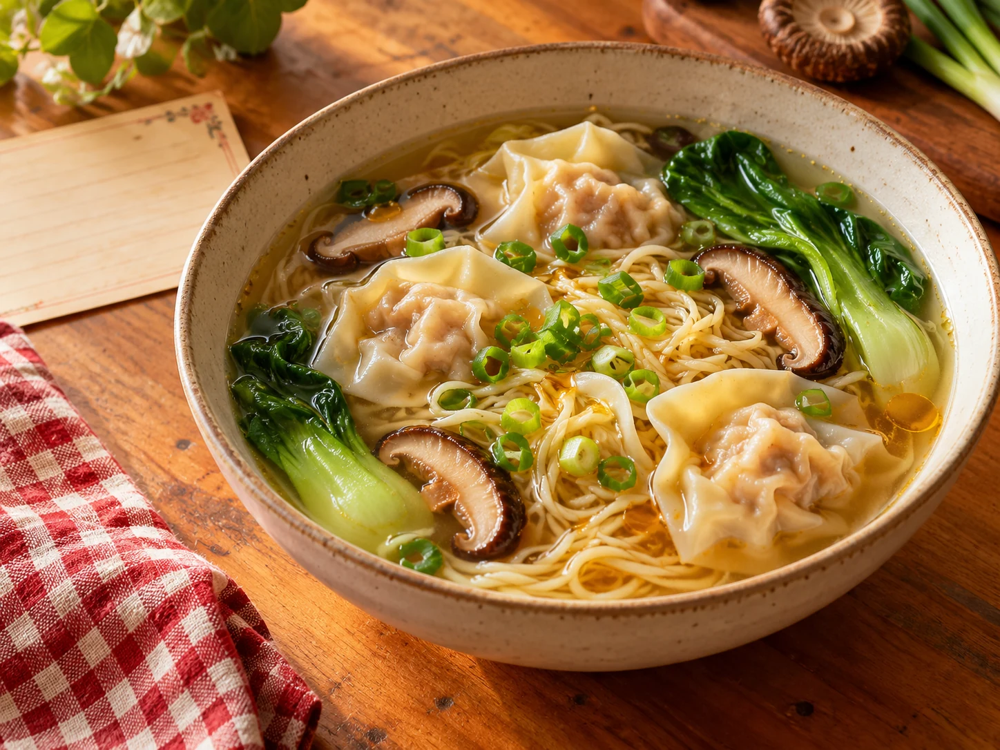

Most lovedFrom the family table
Wonton Soup
A comforting bowl of pork-and-mushroom wontons, noodles, greens, and a simple ginger chicken broth.
- Prep
- 35 min
- Cook
- 45 min
- Serves
- 6
The Tam family recipe box
Find an old favorite, or add something worth passing on.

Most lovedFrom the family table
A comforting bowl of pork-and-mushroom wontons, noodles, greens, and a simple ginger chicken broth.
Family favorites
Browse the box
The whole recipe box
Everything the family has saved, in one easy-to-search place.
Try a different search, or add the dish you were hoping to find.